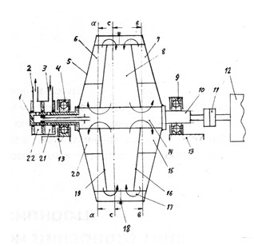
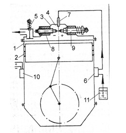
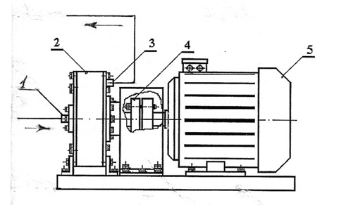

Вода как моторное и печное топливо


Читатель удивится, увидев сочетание слов «вода» и
«топливо». И будет прав. Водой тушат пожары, а топливо жгут в печке или
в моторе. Однако изобретатель, озабоченный судьбой России и всего
человечества, в период надвигающегося энергетического кризиса простую
воду считает спасительной соломинкой, за которую можно ухватиться.
Основоположником направления в энергетике, связанного с использованием
воды в качестве автомобильного топлива, является, по-видимому,
американец Луис Энрихт. Он ещё в 1916 году собрал падких до сенсаций
журналистов и продемонстрировал изобретенный им преобразователь воды в
моторное топливо. На глазах у публики он заполнил бензобак своей машины
водопроводной водой, добавил туда немного зеленоватой жидкости из
пузырька и включил зажигание. Мотор заработал, набирая обороты. По
словам автора, зеленоватая жидкость отбирает у воды кислород, а
оставшийся водород горит в моторе. Журналисты не стали искать в машине
потайной бензобак и сообщили о фантастическом открытии в газетах Америки
и Европы. Энрихт начал продавать права на своё изобретение и успел
разбогатеть. Даже Генри Форд вначале поверил фокуснику и подарил ему
новенький «Форд», но вскоре одумался и машину вернул. Когда покупатели
требовали состав эликсира, то Энрихт уверял, что его формулу он сжёг,
чтобы из-за борьбы за неё не разразилась мировая война. Те подали в суд,
по решению которого мошенник получил срок заключения до выдачи состава.
Так в тюрьме он и скончался, унеся с собой секрет эликсира, а
человечество осталось вынужденным по-прежнему заправляться бензином.
С тех пор много воды утекло, а сообщения об автомобилях, работающих на
воде, появляются постоянно. Много пишут о рационализаторах, частично
разбавляющих бензин водой и тем самым повышающих мощность мотора и
чистоту его выхлопа. Однако бензоколонки почему-то не продают
разбавленное топливо, хотя оно должно быть лучше чистого и дороже.
СМИ часто сообщают и о машинах, работающих на чистой воде, которым
никакой бензин не нужен. Они якобы едут по дорогам то Испании, то
Японии, а то и у нас в России.
В городе Перми живёт 57-летний инженер-механик Ф.К. Глумов, который
«изобрёл и запатентовал разработки, которые позволяют сжигать воду в
качестве топлива и получать почти бесплатную тепловую энергию» [1].
Якобы «прототипы его установки (пока существующей лишь в теории) уже
созданы и успешно применяются!» Глава Департамента промышленного
развития Кировской области, куда изобретатель обращался со своими
идеями, ответил так: «Уникальное устройство для сжигания воды,
несомненно, имеет революционную значимость. Полученные на эти инновации
патенты, а также проведённая нашими специалистами экспертиза
подтверждают перспективность использования этих изобретений для создания
принципиально новой экономики России». Если изобретение так
перспективно, то почему оно до сих пор не внедрено, хотя «Комсомольская
правда» сообщила о нём ещё 20 мая 1995 года? Почему бы руководству
Кировской области и города Перми не перевести Пермскую ГРЭС на питание
турбин водой из Камского водохранилища и не платить за нефть и газ? К
сожалению, это невозможно. И автор, и глава департамента, и его
эксперты, а тем более журналисты ошибаются – вода всё-таки не горит,
можете это проверить.
Бывший сотрудник НПО им. Лавочкина Ю.И. Краснов и главный технолог этого
НПО Е.Г. Антонов «структурируют» обычную воду из-под крана так, что она
становится прекрасным топливом для котельных и моторов, о чем они
выпустили рекламный ролик [2]. Структуризация осуществляется добавлением
в водопроводную воду небольшого количества (порядка 0,1 %) дизтоплива и
взбалтыванием. Через 5 минут отстоя бумажка, опущенная в бутылку с
такой водой, горит, что авторы и демонстрируют доверчивым зрителям для
подтверждения своей идеи. По утверждениям ученых, их вода уже горит в
котельной и успешно работает в тракторных моторах. Идея якобы получила
блестящие отзывы некой швейцарской компании SDS, а также в Южной Корее.
Она признана чрезвычайно важной для промышленности и у нас
Комитетом при президенте РФ, от имени которого отзыв подписал академик
К.В. Фролов. Идея понравилась и бывшему управделами президента Бородину.
Оцененная в Санкт-Петербурге стоимость патента превысила 5 миллиардов
долларов. Авторы обращались со своим предложением в правительство
России, к самому Грефу. Однако не увидели никакого интереса, в связи с
чем и апеллируют к общественности.
В предлагаемой авиастроителями смеси, конечно, ничего горючего кроме
дизтоплива нет. Если бы проверку «топлива» проводили мы, то проткнули бы
пластиковую бутылку со смесью у дна, отлили водички в стакан и
попросили авторов поджечь окунутую в неё бумажку. Не стала бы вода
«структурированной» – ведь дизтопливо отстоялось наверху бутылки.
Рекламный ролик «ученых» – это цирковой фокус: бумажка горела потому,
что впитывала в себя находящийся сверху отстой дизтоплива. Грамотным
стало у нас правительство – не выделило деньги на пустышку!
Если верить СМИ и некоторым ученым, то выдающихся результатов в водной
энергетике добился изобретатель А.В. Вачаев с коллегами из
Магнитогорской горно-металлургической академии [3]. На созданной ими
установке «Энергонива-2» вода, в том числе и сточная, обрабатывается
электрическим разрядом, генерируя энергии впятеро больше, чем
затрачивается. Дополнительно к 3,2 МВт.ч энергии кубометр воды якобы
даёт ещё 214 кг железа, 20 кг марганца и массу других элементов. Авторам
даже выдали патент на «Способ получения элементов и устройство для его
осуществления» [4]. К сожалению, Вачаев скончался в 2000 году, а его
сотрудники не могут запустить свою установку для демонстраций. Поэтому
проверить достоверность сообщений не представляется возможным.
Впрочем, в Южно-уральском университете уверяют, что у них тоже «в ряде
опытов» тепловая энергия, выделяющаяся при электрическом разряде, была в
1,3 – 2,2 раза больше потребляемой электрической [5]. Однако в каком
проценте опытов энергия была больше, а в каком меньше и какова точность
измерений, авторы не сообщают.
О.А. Харченко возобновил работы по получению железа из воды в
Магнитогорском техническом университете [6] и даже запатентовал
«Устройство для получения веществ» [7]. А в институте земного магнетизма
РАН (г. Троицк) дали теорию эффекта Вачаева, придя к выводу, что его
«железом» является соединение O3H6 [8].
У Вачаева нашелся верный поклонник и в городе Жуковском Г.В. Енютин. Он
пишет письма президентам Д.А. Медведеву и В.В. Путину, руководителю
администрации президента В.Ю. Суркову, в Сколково, в Президиум РАН и
требует немедленно «снять финансовую удавку» с разработки Вачаева
(www.open-letter.ru). По его словам, «важнейшее будущее имеет
практическое освоение установки «Энергонива» А.В. Вачаева, что позволит
радикально решить энергетические, экологические и многие другие
проблемы». Однако руководство страны стало настолько мудрым, что
ограничилось ответом «принято к сведению». А не мешало бы ещё кое-кого и
привлечь к ответственности за заведомую ложь.
Далеко продвинулся в создании двигателей с водой в качестве топлива
заведующий исследовательской лабораторией «Суперпоник Лтд» из г. Казани
П.В. Якин [9]. Он сообщает, что патентует сейчас два варианта двигателя –
жидкостной и твердотельный. Двигатели ничего не потребляют и ничего не
выделяют и поэтому названы «Экодвигателями».
Устройство водного «Экодвигателя» показано на рис. 1. На двух полувалах 1
и 10, установленных в подшипниках 4, 9, закреплён вращающийся корпус 5.
Внутри корпуса находятся два центробежных насоса 20 и 15 и три набора
прямых радиальных лопастей, разделённых диафрагмами 19, 16 на три отсека
6, 7 и 8. Все эти детали вращаются с корпусом как одно целое. Полувал
10 через соединительную муфту 11 соединен с электромашиной 12. Последняя
служит как для запуска агрегата в начале его работы, так и для отвода
вырабатываемой электроэнергии и её передачи потребителям в рабочем
режиме.

Рис. 1. «Экодвигатель» П.В. Якина
При включении агрегата электромашина 12 раскручивает корпус 5 до скорости, при которой от режима потребления энергии устройство будто бы переходит к режиму её генерации. Это связано якобы с тем, что насосы 20 и 15 забирают воду из начальной зоны 14 и перекачивают её по своим отсекам 6, 7 в конечную зону 17. Здесь оба потока объединяются, поступают в общий отсек 8 и по нему возвращаются в начальную зону 14.
Вопреки ожиданиям автора, никаких движущих сил в его детище нет. Вода после раскрутки прижмётся центробежными силами к периферии корпуса и двигаться по направлению стрелок не будет. Видимо, понимая это, для самоциркуляции воды и выработке энергии Якин добавил во второй закон Ньютона новый член:
F = ma + km2a2.
В результате этого при циклическом движении тела в одну сторону с малым ускорением, а обратно с большим, силы оказываются не равными, закон сохранения энергии нарушается и возможен выигрыш в энергии. Это как у А. Эйнштейна, который к кинетической энергии тела mv2/2 добавил член mc2 , в результате чего лежачий камень приобрёл колоссальную энергию. Если с Эйнштейном учёный мир согласился, то с Якиным нет. Тогда изобретатель заклеймил не верящих в него учёных словами Горация [10]:
О подражатели, рабское стадо!
Дешевые слуги кичливых господ.
Послушно бубните вы жалкую гадость,
Предавши науку, предавши народ.
Несмотря на непризнание учёными открытия Якина, он утверждает в [9]: «Работоспособность моего двигателя была подтверждена высокой научной инстанцией – Казанским научным центром РАН. Заведующий лабораторией Академэнерго этого центра доктор технических наук Я.И. Кравцов высоко оценил мою работу...» Это дало возможность изобретателю со своим «неисчерпаемым и экологически абсолютно чистым месторождением энергии», добываемой из Тезауруса, обратиться к В.В. Путину. Однако Путин оказался не Ельциным и с ходу денег не дал, а отправил заявку на экспертизу. Получив отрицательное заключение, автор не упал духом. Сейчас он ищет отечественного «энергичного делового человека, который возьмется совершить подвиг освоения, внедрения и развития промышленного производства «Экодвигателя» и тем самым спасёт наше Отечество от угрожающих ему нищеты и развала». На доводку и массовое производство просит всего 7 – 8 миллионов долларов. Найдутся ли желающие?
Лауреат конкурса ИР «Техника – колесница прогресса» М. Весингиреев призывает заливать воду вместо бензина в обычный двигатель внутреннего сгорания [11]. Его аппарат содержит цилиндр 1 с поршнем 2 и головку цилиндра 3, под которой находится камера сгорания 4 (рис. 2). Вода с добавкой едкого натра подается в камеру сгорания из бака 11 насосом 6 через форсунку 7. Распыленная форсункой она проходит между электродами 8, 9 вольтовой дуги, где происходит её диссоциация на водород и кислород. Те сгорают в цилиндре, двигая поршень, коленвал и другие механизмы как в

Рис. 2. Мотор М. Весингиреева
обычном ДВС. Знаменитый изобретатель не учел одного: на разделение H2O на Н2 и О2 требуется куда больше энергии, чем получается при их сгорании. В добавок нужно затрачивать самую ценную энергию – электрическую, а получим лишь механическую. Поэтому, чтобы на воде заработал мотор «Запорожца», на машину нужно дополнительно поставить работающий на солярке двигатель «КАМАЗа» и мощную динамомашину.
И.И. Сташевский из Новокубанска Краснодарского края сообщает о получении им патента на автомобильный двигатель, в котором тоже «отпадает потребность в бензине и дизтопливе» [12]. Секретов устройства не раскрывает, сообщая только, что в работе мотора используется расщепление воды на водород и кислород. Приглашает спонсоров. Грозит, что «если в течение 1 года изобретение не будет востребовано, я вынужден буду обратиться к иностранным фирмам о передаче им исключительных прав на взаимовыгодных условиях». Дальнейшая судьба разработки не известна.
Ученые с альтернативным мышлением считают воду также прекрасным топливом для обогрева помещений. По сообщениям прессы (МК, 10.06.2003 и др.), академик РАЕН О.В. Грицкевич из Владивостока еще в 70-е годы прошлого века открыл принцип бестопливного обогрева, а в 1991 году, если верить картинке из журнала «Техника - молодёжи», его теплогенератор был построен в Армении. Генератор якобы отапливал целый поселок в течение шести с половиной лет. К сожалению, проверить это уже нельзя, так как отопительная система была уничтожена во время военного конфликта и почему-то не восстановлена до сих пор.
Ныне качает энергию из воды по армянскому образцу кандидат технических наук, руководитель научно-внедренческого предприятия «Ангстрем», бывший заведующий кафедрой политехнического института в Твери Р.И. Мустафаев [13]. Его предприятие наладило выпуск и продажу вакуумно-энергетических обогревателей «МУСТ» мощностью 35 – 40 кВт с «коэффициентом эффективности» 172 %. В ближайшее время Мустафаев обещает повысить этот коэффициент до 400 %, после чего, говорит, сжигать газ для отопления станет преступным. По мнению автора, вода в его аппарате, содержащем систему вихревых трубок, закручивается таким образом, что внутри ее молекул возникает резонанс, плотность увеличивается в 1,54 раза (а мы считали воду несжимаемой!), из-за резонанса рвутся связи между молекулами и атомами, а при их последующем восстановлении выделяется энергия, большая затраченной. Избыточная энергия якобы берется из вакуума.
Наладил производство вихревых теплогенераторов также доктор технических наук, профессор, академик РАЕН, Лауреат Международной премии «Факел Бирмингема» и высшей награды ММС «Звезда Вернадского», заслуженный изобретатель Ю.С. Потапов. Его генераторы ЮСМАР запатентованы в России [14], США и других странах. Они выпускаются несколькими предприятиями под марками от ВТГ-1 до ВТГ-10 на разные мощности (рис. 3). КПД теплогенераторов составлял вначале 120 %, а затем возрос до 200 – 400 % и выше. Блестящую рекламу установкам дал журнал

Рис.3. Вихревой теплогенератор Ю.С. Потапова: 1 – входной патрубок холодной воды, 2 – завихряющее устройство, 3 - выходной патрубок горячей воды, 4 – муфта, 5 - электродвигатель
ИР. Заместитель главного редактора М.И. Гаврилов назвал их «предтечей решения энергетических проблем, над которыми бьется ученый мир» [15]. На девятой выставке «Архимед» 2006 года Ю.С. Потаповым демонстрировалась даже компактная электростанция «Диоген», вырабатывающая 5,5 кВт энергии, из которых 2,4 кВт идет на работу компрессора, а остальные 3,1 кВт - потребителю. Внешняя электроэнергия нужна только на запуск двигателя. Работа электростанции якобы основана на том, что вода нагнетается в турбину, где создается вихревой поток молекул со скоростью свыше 500 м/с. После разгона турбины воздух в ней нагревается, увеличивая скорость до 12000 оборотов в минуту. Избыточная энергия, по мнению автора, берётся скорее всего из холодного ядерного синтеза, идущего в вихре. Впрочем, не исключается и торсионное поле [16].
Конструктор теплоустановок из Сызрани В.П. Котельников наладил на своем предприятии производство сходных генераторов «Гравитон» шести типов с входной мощностью от 2,7 до 80 кВт, показанных на выставке «Энергоресурсосбережение» в ноябре 2001 г. Электродвигатель крутит осевой насос с малым углом наклона к оси, обеспечивая циркуляцию воды по энергетическому кольцу. Под действием центробежных сил вода, по словам автора, становится «весомей», а ее масса подпитывается природной энергией. В результате насос мощностью 2,7 кВт обеспечивает подачу на нагрузку – радиаторы отопления либо бойлеры – мощности 11 кВт (ТМ, № 2/2002). Избыточная энергия якобы берется у гравитационного поля Земли путем обмена гравитонами, за что установка и получила свое название. Впрочем, вблизи работающего теплогенератора автором обнаружено замедление хода времени на 3 – 8 секунд за 5 часов, что не исключает и подкачку временем. Котельниковым обнаружено также лечебное действие его установок, что явно свидетельствует о присутствии человеческого фактора – избыточная энергия и остальная чертовщина могли генерироваться только фантазией самого автора.
Теплогенераторы С.В. Козлова марки ТС-1 с мощностью электродвигателя 55, 75, 90 и 110 кВт выпускает тульское предприятие ФГУП ГНПП «Сплав». По словам директора предприятия доктора технических наук, профессора, Героя России Н.А. Макаровца их аппараты марки ТС позволяют снизить потребляемую мощность для обогрева жилых помещений в 5 раз, а в перспективе и в 10 раз [17]. Энергия, дополнительная к затраченной, образуется за счет кавитации воды, возникающей ввиду повышенных скоростей теплоносителя. Но почему энергии при схлопывании пузырьков выделяется больше, чем для создания кавитации, профессор не сообщает.
Санкт-Петербургская Инновационная компания «Фисоник-Фисоненко» не отстает от конкурентов и поставляет свои трансзвуковые струйные аппараты ТСА для котельных. По рекламным проспектам компании «в ТСА генерируется дополнительная (сверх подведённой к ним) энергия вследствие более полного использования внутренней энергии воды, часть которой выступает в роли природного топлива». КПД аппаратов якобы достигает 350 процентов.
В связи с созданным рекламой повышенным спросом на вихревые теплогенераторы их выпускают также завод имени Дегтярёва под маркой ВТУ и фирма «Нотека-С» (г. Жуковский МО) под маркой НТК.
А наиболее выдающихся результатов в области вихревых установок добились сотрудники официальной Российской академии наук совместно с Физтехом [18]. В Институте прикладной механики РАН ими построен аппарат для преобразования внутренней энергии воды в тепловую. Стабильно выход тепла по отношению к затраченной энергии составляет 3, а 19.02.2007 получен рекордный коэффициент преобразования электрической энергии сети в тепловую - 13,4! Борец с лженаукой, коллега авторов по РАН академик Э.П. Кругляков почему-то молчит, когда лженауку творят сотрудники его академии.
По-видимому, наиболее совершенные вихревые термогенераторы ТМ мощностью от 3 до 90 кВт выпускает московское ООО «НПО Термовихрь» [19]. Однако даже по рекламным данным их КПД не превышает 98 %. Ни в одном из вышеупомянутых вихревых теплогенераторов КПД конечно тоже не превышал, да и не мог превышать 100 %. Тепло здесь берется от электрического тока сети, вращающего электродвигатель. Нагрев осуществляется за счет вязкого трения между водой, вращающимися лопастями и корпусом. Поэтому КПД выше 100 % - это результат ошибки измерений или рекламное враньё производителей. По независимым измерениям КПД вихревых установок не превышал 50 - 85 %. Да и откуда взяться больше, если для нагрева используется не простая спираль, как в чайнике, а сложный механизм с массой движущихся и трущихся деталей! Следовательно, вихревые теплогенераторы – это не вечные двигатели, а скорее приборы, нерационально использующие электроэнергию для нагрева воды. Интересующиеся могут посмотреть статьи С. Геллера в ж. «Инженер» № 1 и 10 за 2008 г. и № 5 за 2006 г. Отметим также, что для работы вихревых термогенераторов нужна электроэнергия, которая сама получается с КПД около 40 %. Поэтому в промышленных масштабах топливо для нагрева лучше использовать напрямую, без получения и передачи электричества.
Многие изобретатели надеются создать вечный двигатель на разложении воды Н2О на водород и кислород с последующим сжиганием полученного гремучего газа. Вышеупомянутый теплогенератор О.В. Грицкевича, разрушенный в Армении, якобы тоже брал энергию из молекул воды, которые разрывались в вихревом потоке, а затем снова соединялись. Но почему выделяемая энергия при соединении оказывается большей затраченной на разрыв, изобретатели не сообщают.
Энергетическая асимметрия электролиза воды якобы открыта ещё в 1881 г. Н. Слугиновым, который показал, что энергия на выходе на 30 % больше, чем на входе. Профессор Канарев из Краснодара, говорят, добился ещё лучших результатов – увеличения энергии вдвое. Инженер-электрик Р. Катаргин трезво утверждает, что при сжигании водорода на молекулу воды выделяется 6 эВ энергии, а для обычного разложения воды в электролитической ванне нужно затратить 14,2 эВ на молекулу, что делает электролиз энергетически невыгодным [20]. Разлагать воду, по его мнению, следует облучением маломощным лазером с частотой 1,87.1014 Гц, равной частоте собственных колебаний протона около иона кислорода. Тогда якобы на разложение молекулы будет затрачиваться всего 0,74 эВ, что сделает цикл разложения – слияния экзотермическим с выделением 5,25 эВ. Ещё лучше для разложения воды вместо лазера применить катализатор с той же электронной плазменной частотой. Тогда разложение будто бы пойдет вообще без затрат энергии. Однако, если бы что-то подобное было возможно, то вода в реках, морях, океанах давно бы закипела, а то и взорвалась, уничтожив на свете всё, в том числе и нас с вами.
В.В. Студенников и Г.И. Кудымов предложили использовать открытое ими новое явление – гравитационный электролиз воды и на его основе изобрели новый генератор бесплатной энергии [21]. К сожалению, для работы электролизера требуется механический привод и тепловой насос. Тем не менее, экономические показатели удивляют: стоимость 1 МДж тепла по расчету авторов составляет 0,027 – 0,040 цента США, а электроэнергии – 0,11 цента! Кто бы поверил!
По сообщениям прессы, В.Ф. Маркелов из Санкт-Петербурга получает энергии в 93 раза больше, чем затрачивает, за счёт циркуляции воды в вертикальной трубе. А москвич В.Ф. Прокопенко предлагает запатентованную им установку [22], в которой «из восходящей линии с генератором тепла и архимедовых сил от компрессора и нисходящей линии с радиаторами отопления в квартирах образует теплоэлектростанцию в многоэтажном доме за счет использования сил гравитации для выработки тепла (электроэнергии) нагрева воды». Изобретатель Ю.П. Рассадкин на выставке «Высокие технологии» продемонстрировал аппарат, в котором вода циркулирует в замкнутом контуре под действием вентилятора, давая в несколько раз больше тепла, чем затрачивается электроэнергии. Рекордом было увеличение в 7, 10 и даже 25 раз. Дополнительная энергия якобы появляется за счет кавитации и распада молекул H2O на H2 и O2 и их последующего соединения [23].
Чем ближе человечество подходит к энергетическому кризису, тем больше такого рода сообщений появляется в СМИ. Д двигатели и нагреватели, не потребляющие традиционного топлива, одни изобретают искренне желая осчастливить род людской, другие по неграмотности, а третьи из жажды денег или славы. Обычно такие предложения остаются на бумаге и дело не доходит даже до изготовления макетов. Если же сообщается о собранных и «действующих» аппаратах, то это ошибка или обман. Реально они никогда не работали, да и работать не могли, так как противоречат законам природы. Их демонстрируют лишь журналистам да зевакам. Если бы изобретатель смог показать свой реально действующий образец вечного двигателя специалистам, то эпохе угля, нефти и газа и в самом деле пришел бы конец, а автор заслуженно получил бы награды и премии.
ЛИТЕРАТУРА
1. Д. Писаренко. Горючая вода. Аргументы и факты, № 3 от 18 -24.01. 2012, с. 16
2. Водородное топливо. Киностудия «Княжий остров». Knyaj@mail.ru
3. Метод Вачаева – Иванова. В кн. «Взаимопревращения химических элементов». Екатеринбург, УРО РАН, 2003
4. Пат. РФ № 2096846
5. Г.Ф. Кузнецов и др. О протекании низкоэнергетических ядерных реакций
при электрическом разряде в водных растворах. Программа и тезисы 18-й
Российской конф. по холодной трансмутации ядер химических элементов и
шаровой молнии. М., 2011, с. 39
6. О.А. Харченко. Экспериментальное исследование протекания
электроплазменных процессов в водных растворах. Программа и тезисы 19-й
Российской конф. по холодной трансмутации ядер химических элементов и
шаровой молнии. М., 2012, с. 39
7. Пат. РФ на ПМ № 112486
8. А.И. Лаптухов. Плотные молекулы и структура «железа» Вачаева,
полученного им из воды в специальном электрическом разряде. Программа и
тезисы 19-й Российской конф. по холодной трансмутации ядер химических
элементов и шаровой молнии. М., 2012, с. 40
9. П. Якин. Человек и Энергия. О её связи с судьбой мира и России. Инженер, 2012, № 1, с. 10 – 14; № 2, с. 22 - 26
10. П. Якин. Наука без мозгов и совести. Отстраненность государства от науки. Инженер, 2012, № 11, с. 18 – 21
11. М. Весингиреев. Зальём воду вместо бензина. Изобретатель и рационализатор, 2005, № 7, с. 5; пат. РФ № 2261342
12. Бесплатная реклама. Изобретатель и рационализатор, 2001, № 7, с. 18
13. Пат. РФ № 2132517
14. Пат. РФ № 2045715
15. Синельников С., Шаров В. КПД больше единицы. Изобретатель и рационализатор, 2002, № 2, с. 20 - 21
16. Потапов Ю.С., Фоминский Л.П., Потапов С.Ю. Энергия вращения. Кишинев, 2001
17. Макаровец Н.А. Ресурсо- и энергосберегающие технологии ОПК. Интеграл, 2006, № 3, с. 32 - 35
18. Беркова М.Д., Быков А.А., Великодный В.Ю. и др. Исследование работы
вихревого кавитационного генератора. Проблемы холодной трансмутации ядер
химических элементов и шаровой молнии. Мат.
14-й Рос. конф., Дагомыс, 1 – 8 окт 2006. М., 2008, с. 48 – 57
19. Вихревой термогенератор ТМГ. Инженер, 2009, № 12, с. 17; пат. РФ № 2177591
20. Катаргин Р. Тесла-компрессор. Инженер, 2008, № 10, с. 24 – 25
21. Междунар. пат. заявка № 98/00190 от 7.10.1997
22. Пат. РФ № 2188336.
23. В. Дубинский. Откуда что берётся? Инженер, 2006, № 8, с. 9